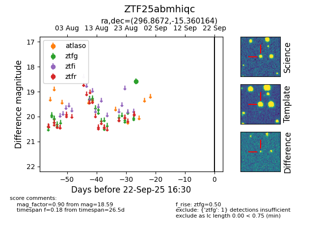

FINK: ZTF25abmhiqc
Lasair: ZTF25abmhiqc
ALeRCE: ZTF25abmhiqc
ZTF25abmhiqc (ztf,fink)
equatorial (ra, dec) = (296.8672,-15.36016)
galactic (l, b) = (25.0626,-19.17852)

last ztfg=18.59
1 ztfg detections